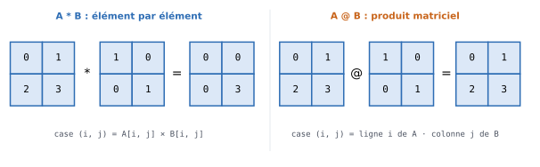
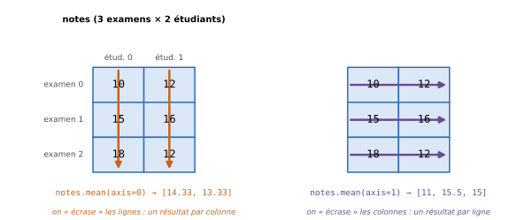

10. numpy et le calcul matriciel#
Objectifs du chapitre
À la fin de ce chapitre, vous saurez :
créer des tableaux
numpy(vecteurs et matrices) et connaître leur forme ;faire la différence entre opérations élément par élément et produit matriciel ;
extraire des sous-parties d’un tableau ;
calculer des statistiques (somme, moyenne, écart-type…) sur tout un tableau ou ligne par ligne / colonne par colonne ;
utiliser des masques booléens pour compter ou filtrer des valeurs.
Prérequis : chapitres 1 à 5 (et quelques notions de calcul matriciel). Ce chapitre et les suivants se travaillent sur votre ordinateur, de préférence dans un notebook Jupyter (voir l’introduction) : les fenêtres de code intégrées ne disposent pas de numpy. Durée indicative : 1h30.
Ce chapitre traite d’un module en particulier : le module numpy, dont le nom est un raccourci pour Numerical Python.
Cette bibliothèque fournit des outils de calcul numérique efficaces : elle permet de manipuler des vecteurs et des matrices (voire des tableaux à plus de deux dimensions) et constitue la base de la plupart des outils d’analyse de données en Python (comme pandas et matplotlib, que nous verrons dans les chapitres suivants, ou scikit-learn pour l’apprentissage automatique).
Installer numpy
Le module numpy ne fait pas partie de la bibliothèque standard : installez-le si besoin (dans Thonny : Outils > Gérer les paquets… ; en ligne de commande : pip install numpy ; il est inclus dans Anaconda).
Avant toute chose, il faut importer ce module :
import numpy as np
Le module est renommé en np lors de l’import : c’est une convention très répandue, que vous retrouverez dans tous les exemples en ligne.
Ce chapitre est très loin de couvrir l’ensemble des fonctionnalités de numpy : n’hésitez pas à consulter la documentation numpy pour trouver ce qui pourrait vous être utile.
10.1. Les tableaux numpy#
L’objet de base de numpy est le tableau multi-dimensionnel (de type ndarray).
On peut créer un vecteur (tableau à une dimension) à partir d’une liste :
vec = np.array([1, 4, 6, 7])
print(vec)
print(vec.ndim) # nombre de dimensions
print(vec.shape) # forme : ici 4 éléments
print(vec.dtype) # type des données stockées
[1 4 6 7]
1
(4,)
int64
et une matrice (tableau à deux dimensions) à partir d’une liste de listes, chaque sous-liste correspondant à une ligne :
A = np.array([[0, 1, 2],
[3, 4, 5]])
print(A)
print(A.ndim)
print(A.shape) # (nombre de lignes, nombre de colonnes)
print(A.T) # transposée
[[0 1 2]
[3 4 5]]
2
(2, 3)
[[0 3]
[1 4]
[2 5]]
Contrairement aux listes Python, un tableau numpy a un type unique pour tous ses éléments (ici des entiers) : on ne peut pas mélanger des types différents dans un même tableau.
On accède aux éléments d’une matrice avec la syntaxe A[i, j] (ligne i, colonne j, toujours en commençant à 0) :
print(A[1, 2])
A[0, 0] = 10
print(A)
5
[[10 1 2]
[ 3 4 5]]
Testez-vous
Avec M = np.array([[1, 2], [3, 4], [5, 6]]), que valent M.shape, M[2, 0], M.T.shape et M[0, 1] + M[1, 0] ?
Réponse
M.shapevaut(3, 2): 3 lignes et 2 colonnes ;M[2, 0]vaut5(troisième ligne, première colonne) ;M.T.shapevaut(2, 3);M[0, 1] + M[1, 0]vaut2 + 3 = 5.
10.2. Les opérations élément par élément#
La grande force de numpy est que les opérations arithmétiques s’appliquent à tous les éléments d’un tableau à la fois, sans avoir à écrire de boucle :
vec = np.array([1, 4, 6, 7])
print(2.5 * vec)
print(vec + 10)
print(vec ** 2)
[ 2.5 10. 15. 17.5]
[11 14 16 17]
[ 1 16 36 49]
Les opérations entre deux tableaux de même forme sont également effectuées élément par élément :
u = np.array([1, 2, 3])
v = np.array([10, 20, 30])
print(u + v)
print(u * v)
[11 22 33]
[10 40 90]
numpy propose aussi des versions « vectorisées » des fonctions mathématiques usuelles, qui s’appliquent à chaque élément : np.sqrt, np.exp, np.log, np.sin…
print(np.sqrt(np.array([1, 4, 9, 16])))
[1. 2. 3. 4.]
À comparer avec les listes
Avec des listes, [1, 2] * 2 vaut [1, 2, 1, 2] (répétition) et [1, 2] + [3, 4] vaut [1, 2, 3, 4] (concaténation).
Avec des tableaux numpy, np.array([1, 2]) * 2 vaut [2, 4] et np.array([1, 2]) + np.array([3, 4]) vaut [4, 6].
Le même opérateur n’a donc pas du tout le même sens selon le type des données !
10.3. Produit matriciel#
Conséquence de ce qui précède : le produit * entre deux matrices est le produit élément par élément, et non le produit matriciel que l’on utilise en mathématiques.
Pour effectuer un produit matriciel, on utilise l’opérateur @.


Fig. 10.1 Le produit élément par élément A * B et le produit matriciel A @ B, avec B la matrice identité.#
A = np.array([[0, 1], [2, 3]])
I = np.array([[1, 0], [0, 1]])
print(A * I) # élément par élément
print(A @ I) # produit matriciel : on retrouve A
[[0 0]
[0 3]]
[[0 1]
[2 3]]
De même, A ** 2 élève au carré chacun des éléments de A, ce qui est différent du produit de A par elle-même :
print(A ** 2)
print(A @ A)
[[0 1]
[4 9]]
[[ 2 3]
[ 6 11]]
Pour l’addition, en revanche, il n’y a pas de confusion possible : A + A est bien la somme matricielle.
10.4. Créer des tableaux usuels#
numpy permet de créer très simplement des tableaux remplis de 0, de 1, la matrice identité, ou des séquences de valeurs :
print(np.zeros((2, 3))) # (2, 3) est la forme du tableau à produire
print(np.ones((2, 3)))
print(np.eye(2)) # eye -> matrice identité
print(np.arange(10)) # équivalent de range, mais produit un tableau
print(np.linspace(0, 1, 11)) # 11 valeurs régulièrement espacées entre 0 et 1 (inclus)
[[0. 0. 0.]
[0. 0. 0.]]
[[1. 1. 1.]
[1. 1. 1.]]
[[1. 0.]
[0. 1.]]
[0 1 2 3 4 5 6 7 8 9]
[0. 0.1 0.2 0.3 0.4 0.5 0.6 0.7 0.8 0.9 1. ]
La méthode reshape permet de changer la forme d’un tableau (sans changer le nombre total d’éléments) :
m = np.arange(10)
print(m.reshape((5, 2))) # 5 lignes et 2 colonnes
[[0 1]
[2 3]
[4 5]
[6 7]
[8 9]]
Enfin, le sous-module np.random permet de générer des tableaux de nombres aléatoires, par exemple np.random.randint(1, 7, size=10) pour simuler 10 lancers de dé.
10.5. Accéder à des sous-parties d’un tableau#
Comme pour les listes, on peut extraire des « tranches » (slices) d’un tableau, avec la syntaxe debut:fin (fin exclue) dans chaque dimension :
M = np.array([[0, 1, 2, 3, 4],
[5, 6, 7, 8, 9],
[10, 11, 12, 13, 14],
[15, 16, 17, 18, 19]])
print(M[:2, 3:]) # lignes 0 et 1, colonnes à partir de 3
[[3 4]
[8 9]]
print(M[1:3, :]) # lignes 1 et 2, toutes les colonnes
print(M[:, 0]) # la première colonne (toutes les lignes)
print(M[-1]) # la dernière ligne
[[ 5 6 7 8 9]
[10 11 12 13 14]]
[ 0 5 10 15]
[15 16 17 18 19]
On peut également utiliser une liste (ou un tableau) d’indices pour accéder aux éléments situés à ces positions :
v = np.array([1, 5, 7, 9, 12])
print(v[[0, 4]]) # les éléments d'indices 0 et 4
[ 1 12]
Testez-vous
Avec la matrice M ci-dessus, comment extraire :
la troisième colonne ?
le bloc formé des deux dernières lignes et des deux dernières colonnes ?
l’élément 13 ?
Réponse
M[:, 2];M[2:, 3:](ouM[-2:, -2:]) ;M[2, 3].
10.6. Statistiques sur les tableaux#
Une fois un tableau défini, on peut très facilement calculer la somme de ses éléments, son minimum, son maximum, sa moyenne ou son écart-type :
print(np.sum(M)) # peut aussi s'écrire M.sum()
print(np.min(M)) # M.min()
print(np.max(M)) # M.max()
print(np.mean(M)) # M.mean()
print(np.std(M)) # M.std()
190
0
19
9.5
5.766281297335398
Pour toutes ces opérations, deux syntaxes co-existent (np.min(M) et M.min()), qui donnent le même résultat.
10.6.1. Calculs par ligne ou par colonne : l’argument axis#
On peut aussi effectuer ces opérations ligne par ligne ou colonne par colonne, grâce à l’argument axis.
Prenons l’exemple d’un tableau de notes, avec une ligne par examen et une colonne par étudiant :


Fig. 10.2 Avec axis=0, on agrège le long des lignes (on obtient un résultat par colonne) ; avec axis=1, on agrège le long des colonnes (un résultat par ligne).#
notes = np.array([[10, 12],
[15, 16],
[18, 12]])
print(notes.mean(axis=0)) # moyenne de chaque étudiant (colonne)
print(notes.mean(axis=1)) # moyenne de chaque examen (ligne)
[14.33333333 13.33333333]
[11. 15.5 15. ]
```{admonition} Astuce pour retenir le sens de axis
:class: tip
axis=0 fait « disparaître » la dimension 0 (les lignes) : le résultat a autant de valeurs qu’il y a de colonnes.
axis=1 fait disparaître la dimension 1 (les colonnes) : le résultat a autant de valeurs qu’il y a de lignes.
En cas de doute, vérifiez la forme du résultat avec .shape !
### Masques booléens
Enfin, appliquer une comparaison à un tableau produit un tableau de booléens, appelé **masque** :
```{code-cell} ipython3
print(M > 5) # True à chaque position où l'élément de M est > 5
Comme True compte pour 1 et False pour 0, la somme d’un masque donne le nombre de valeurs qui vérifient la condition :
print(np.sum(M > 5))
14
Et un masque permet de sélectionner les valeurs qui vérifient la condition :
print(M[M > 15])
[16 17 18 19]
10.7. Bonnes pratiques : éviter les boucles#
Utilisez autant que possible les fonctions prédéfinies de numpy plutôt que de recoder les opérations vous-même avec des boucles.
C’est plus court à écrire, et surtout beaucoup plus rapide à l’exécution, comme le montre la comparaison suivante :
tableau = np.ones((100, 10))
%%timeit
# %%timeit (spécifique à Jupyter) mesure le temps d'exécution d'un morceau de code
tableau.sum()
823 ns ± 13.7 ns per loop (mean ± std. dev. of 7 runs, 1,000,000 loops each)
%%timeit
s = 0
for v in tableau: # À éviter !
s += v.sum()
73.6 μs ± 1.16 μs per loop (mean ± std. dev. of 7 runs, 10,000 loops each)
La version avec une boucle est beaucoup plus lente (regardez les unités : µs pour microsecondes, ns pour nanosecondes). Sur de gros volumes de données, la différence se compte en secondes, voire en minutes.
Différences avec R et SAS
Un tableau
numpyà une dimension est l’équivalent d’un vecteur R, et à deux dimensions d’une matrice : les opérations+,*,**… s’appliquent élément par élément, comme en R.Le produit matriciel
%*%s’écrit@; la transposéet(A)s’écritA.T.apply(M, 2, mean)(par colonne) s’écritM.mean(axis=0), etapply(M, 1, mean)(par ligne)M.mean(axis=1).seq(0, 1, length.out = 11)s’écritnp.linspace(0, 1, 11);rep(0, 5)s’écritnp.zeros(5).M[M > 5]fonctionne comme en R ;sum(M > 5)s’écritnp.sum(M > 5).
10.8. Exercices#
Exercice 10.1 : Somme des entiers ★
Calculez en numpy, sans boucle, la somme des n premiers entiers (de 0 à n - 1), puis la somme de leurs carrés, pour n fixé.
Solution
import numpy as np
n = 10
entiers = np.arange(n)
print(entiers.sum())
print((entiers ** 2).sum())
Exercice 10.2 : Notes d’examens ★
Supposons qu’on ait stocké dans le tableau suivant les notes reçues par 2 étudiants à 3 examens :
notes = np.array(
[[10, 12],
[15, 16],
[18, 12]]
)
Calculez la moyenne de chacun des deux étudiants.
Calculez le nombre de notes supérieures à 12 contenues dans ce tableau.
Calculez la meilleure note obtenue à chaque examen.
Solution
import numpy as np
notes = np.array(
[[10, 12],
[15, 16],
[18, 12]]
)
moyennes = notes.mean(axis=0)
n_notes_sup_12 = np.sum(notes > 12)
meilleures = notes.max(axis=1)
print(moyennes, n_notes_sup_12, meilleures)
Exercice 10.3 : Centrer et réduire ★★
En statistique, centrer-réduire une série de valeurs consiste à lui soustraire sa moyenne puis à diviser le résultat par son écart-type.
Écrivez une fonction centre_reduit(x) qui retourne la version centrée-réduite d’un vecteur numpy, puis vérifiez que le résultat a bien une moyenne nulle (aux erreurs d’arrondi près) et un écart-type égal à 1.
Solution
import numpy as np
def centre_reduit(x):
return (x - x.mean()) / x.std()
x = np.array([12., 15., 9., 14., 10.])
z = centre_reduit(x)
print(z, z.mean(), z.std())
La moyenne obtenue est de l’ordre de 1e-16 au lieu de 0 exactement : c’est dû aux approximations des nombres à virgule.
Exercice 10.4 : Simulation de lancers de dés ★★
À l’aide de np.random.randint, simulez 10 000 lancers de deux dés (un tableau de forme (10000, 2)), calculez la somme de chaque lancer, puis la proportion des lancers dont la somme vaut 7. Comparez avec l’exercice 4.7 : le code est-il plus simple ? Plus rapide ?
Indice
np.random.randint(1, 7, size=(10000, 2)) produit un tableau d’entiers entre 1 et 6 (7 exclu). Faites ensuite une somme selon le bon axe, puis utilisez un masque.
Solution
import numpy as np
lancers = np.random.randint(1, 7, size=(10000, 2))
sommes = lancers.sum(axis=1) # une somme par lancer (par ligne)
proportion = np.mean(sommes == 7) # la moyenne d'un masque est une proportion
print(proportion)
Aucune boucle n’est nécessaire : le code est plus court et s’exécute beaucoup plus vite que la version de l’exercice 4.7.
10.9. Bilan du chapitre#
À retenir
import numpy as np;np.array(liste); attributs.shape,.ndim,.dtype; transposée.T.Les opérations (
+,*,**, fonctionsnp.sqrt…) s’appliquent élément par élément ; le produit matriciel s’écrit@.Constructeurs :
np.zeros,np.ones,np.eye,np.arange,np.linspace,.reshape.Accès :
M[i, j],M[debut:fin, debut:fin],M[:, j](colonnej).Statistiques :
sum,min,max,mean,std, avecaxis=0(par colonne) ouaxis=1(par ligne).Masques :
M > 5,np.sum(M > 5),M[M > 5].Pas de boucle sur un tableau
numpyquand une fonction existe !
Faites le point : êtes-vous capable de…
créer un vecteur ou une matrice et connaître sa forme ?
prédire le résultat de
A * Bet deA @ B?extraire une ligne, une colonne ou un bloc d’une matrice ?
calculer une moyenne par ligne ou par colonne ?
compter les valeurs vérifiant une condition avec un masque ?